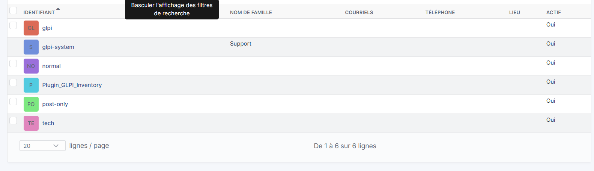
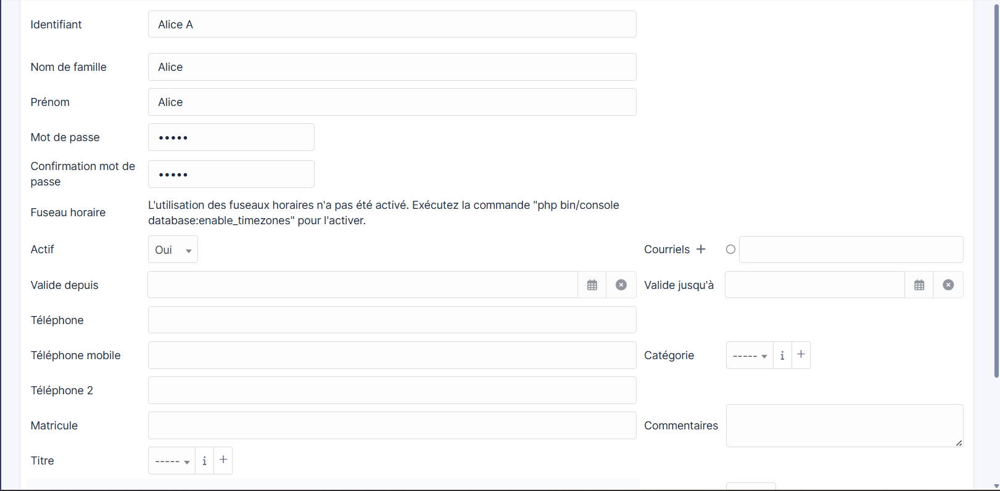
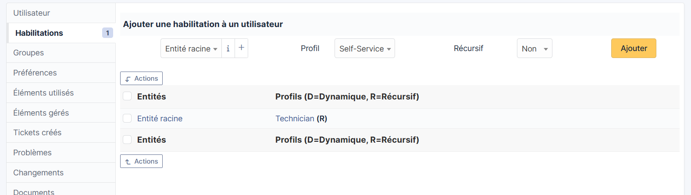
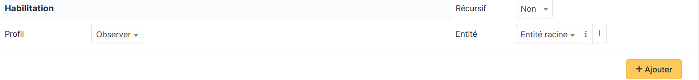
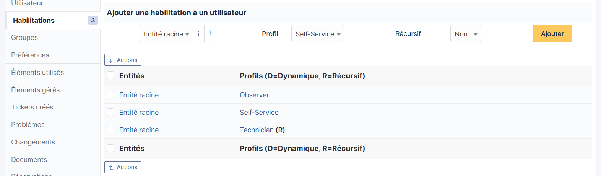
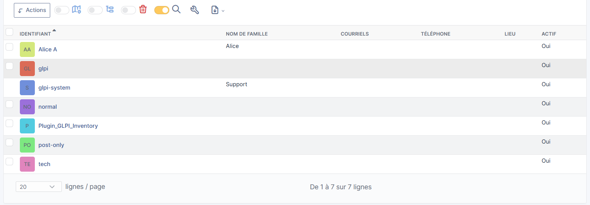

Dans GLPI, les habilitations permettent de définir ce que chaque utilisateur peut faire ou voir. Chaque utilisateur se voit attribuer un profil sur une entité donnée. Cette gestion des droits est essentielle pour sécuriser l'accès aux données et respecter les responsabilités de chacun.
| Profil | Description |
|---|---|
| Super-Admin | Accès total à toutes les fonctionnalités |
| Admin | Administration complète sauf configuration globale |
| Technician | Gestion des tickets, du parc et des interventions |
| Observer | Lecture seule sur l'ensemble du parc |
| Self-Service | Accès au portail utilisateur uniquement |
| Post-only | Création de tickets uniquement |
Depuis le menu principal : Administration → Utilisateurs
La liste affiche tous les comptes existants avec leur identifiant, nom, courriel et statut actif.

Cliquez sur Ajouter un utilisateur
La fiche utilisateur s'affiche avec toutes les champs d'informations : identifiant, nom, prénom, mot de passe, statut actif, etc. Remplir et créer l'utilisateur.

Dans le menu latéral gauche, cliquez sur Habilitations.
Cet onglet affiche les profils actuellement attribués à l'utilisateur sur chaque entité.

Pour ajouter un profil supplémentaire à l'utilisateur, utilisez le formulaire en haut de la section Habilitations :
Entité racineObserver)Non ou Oui selon si le profil doit s'appliquer aux sous-entitésCliquez ensuite sur Ajouter.

Après avoir ajouté plusieurs habilitations, l'utilisateur Alice dispose de trois profils :

De retour dans Administration → Utilisateurs, on constate que l'utilisateur Alice A apparaît bien dans la liste avec son compte actif.
